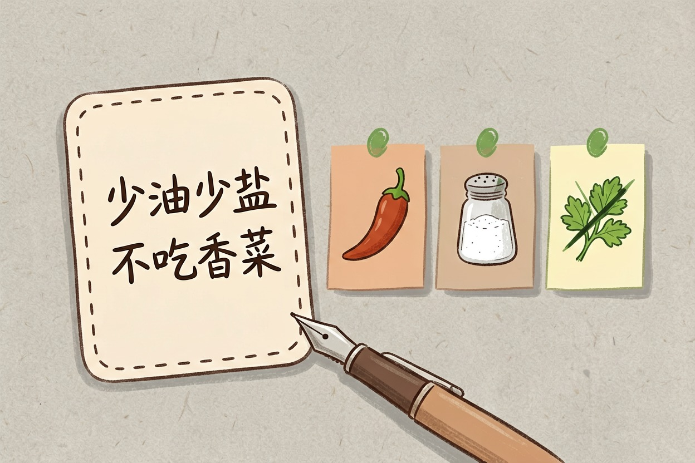
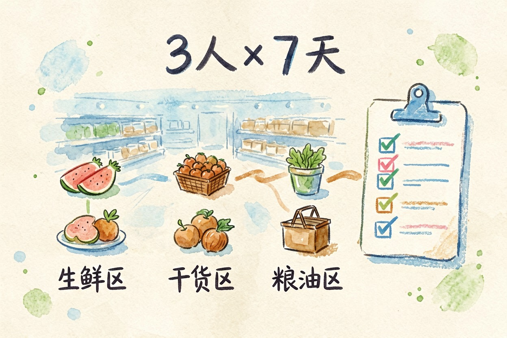
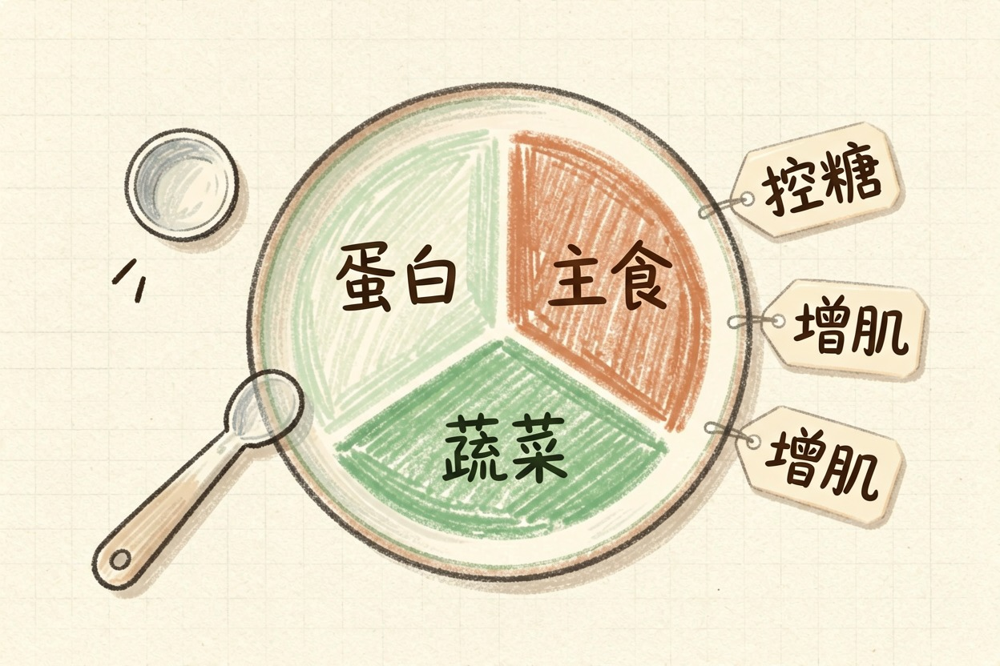
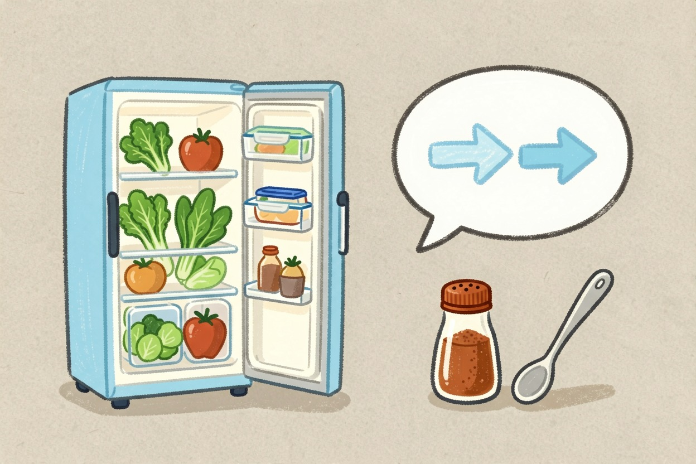
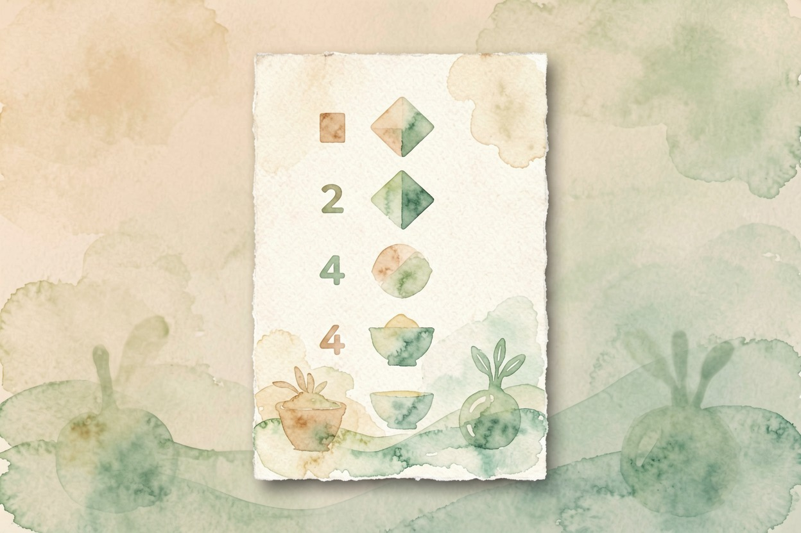

用 AI 安排一周食谱？买菜清单一起出好 — Learntide
每天想吃什么最费脑子，还常买多。让 AI 出一周食谱和买菜清单，省下决策也少浪费。
ai安排食谱 先说清口味

你若每天纠结吃什么，可以试试让 AI 排。ai安排食谱 前，先把口味和忌口讲明白。爱辣还是爱清淡，都要说。
不吃的东西一定列全。过敏的、忌口的、单纯不吃的，分开写。讲清了，它才不乱配。你也别一次塞太多限制，先抓主要的。家里谁做饭也写上。老人小孩口味不同，分开标。辣度用几级说清。汤和主食的偏好也提。预算先给个范围。忌口写得越细越好，漏一项就可能配出你不爱吃的，返工更费时间，尤其过敏类千万别省。
按人数和天数出清单

一个人吃和一家三口，买法不同。你告诉 AI 几天、几人、几餐，它就能排满一周。口味偏好和忌口分开说，它才不把两件事搅在一起。
让它连买菜清单一起出。照单买，不漏也不多。清单按超市分区列，你逛着更顺。买菜前把清单截图，结账快很多。写明早中晚几餐在家。外食那天就别买双份。生鲜和干货分开列。量按人天算，别估。周末先按清单备一次，下一周就知道该多买还是少买；第一次照单买完记一下哪些买多了，第二次让 AI 照着砍，越用越顺手，别怕麻烦这步最值。
我家三口，周一至周日，早晚两餐在家。
口味：少油少盐，孩子不吃香菜，我爱吃点辣。
预算每天约 60 元。请给一周食谱和买菜清单，按超市分区列。让食谱照顾你的目标

想控糖、想清淡、想长肉，写法不同。你给的目标越具体，食谱越贴你。
比如「这周少主食」。它就会把米饭换成杂粮和薯类。目标写清，搭配才不空。你也可以把不爱吃的菜告诉它，它绕开。每周称一次看变化。蛋白够不够也提。想增肌就把蛋白量写具体，想控糖就把主食比例压下来，越细越贴，别只说想吃得健康，它才好照着配。蔬菜种类让它换着来。少油到几克写明白。调味料也别忽略，少盐就写明每日几克，它才不会给你配重口的组合。
剩菜和临时改动怎么办

计划赶不上变化。某天不想吃，就让 AI 把那顿换掉。它顺手把买菜量也调了。
冰箱有快坏的菜，先安排掉。这样少浪费，也更新鲜。临时加人吃饭，也让它加量。周末想偷懒，就让它出简单的。今晚加班就改快手菜。约会日让它排轻点的。宴客也让它加菜。连续外食多就让它减买菜量，别照原单买回家放坏。买来的菜吃不完就让它出个剩菜改造方子，别总倒掉浪费钱。
这些事别全交给 AI 定
AI 不知你当天的胃口。它给的只是参考，不是标准答案。吃多少你自已定。同一道菜今天想吃得淡明天想吃得香，它猜不到，按你当天口味微调才是正解。
去 AI 工具导航找合适的助手。先小范围试一周，别一上来就全照做。用得好是帮手，用不好是干扰。记住 ai安排食谱 只是建议，别盲信它替你管健康。它不会尝咸淡，你尝了再调。孕期饮食问医生。它给的量也只是估算。糖尿病人群的饮食它给不了医嘱级方案，这类还是听营养师的话。

本文信息核对于 2026-08-08。AI 产品的价格、免费额度与功能变动频繁，实际以各工具官网当前说明为准。